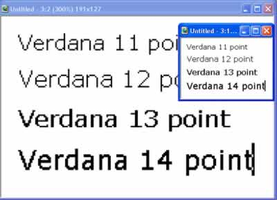
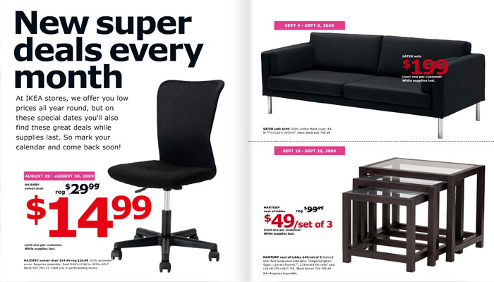
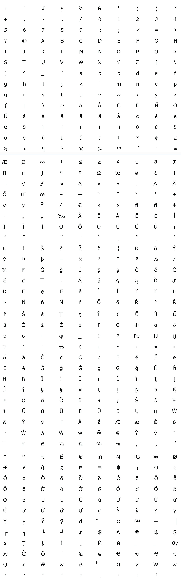

Home
SF MOMA
Verdana
Designed by Matthew Carter in 1996
About Verdana
TVirginia Howlett, one of Microsoft’s head designers since 1985, also recognized the need for a Frutiger-style font, and so in 1996 she commissioned Matthew Carter to design Verdana. The name is a mix of the words “verdant” and “Ana,” the name of Howlett’s daughter. Verdana is distinguished by its tall x-height (the length of lowercase letters), wide proportions and loose letter spacing, all of which combine to make it easy to read on the relatively low-resolution monitors that were the norm in 1996. In the retina screen world of today, however, the value of such designs has been called into question. Indeed, one might even conclude that the era of digital font experimentation, which began with the introduction of phototypesetting in the 1950s and continued through the early 2000s, has come to an end. Now, virtually any font can work as a “digital font.” A new era of experimentation can begin.
Verdana 60pt
The quick brown fox jumps over the lazy dog
Verdana 45pt
The quick brown fox jumps over the lazy dog
Verdana 24pt
The quick brown fox jumps over the lazy dog
Verdana 14pt
The quick brown fox jumps over the lazy dog
Verdana 9pt
The quick brown fox jumps over the lazy dog
 
